Placar publicado do segundo turno. A margem de 95% da diferença é ±4,10 pontos sob amostragem aleatória simples.
Placar ao substituir somente a renda pela PNADC 2025. A margem inverte o sinal.
Vinte e seis por cento declaram que o voto pode mudar e quatro por cento estão indecisos. É cinco vezes a diferença noticiada.
Diferença do 1º turno em entrevistas realizadas e depois da ponderação. Nesta margem, o peso favorece a oposição.
Desaprovam o governo e não votam na oposição. Teto endereçável, estável entre 6,40 e 7,05 nas seis partições fechadas.
Aplicadas a 2.058 eleitores e ausentes das 51 páginas, inclusive o voto de 2022 e a escala ideológica de sete pontos.
Sexo, idade, escolaridade e região preservam a liderança publicada. O desvio dominante é renda.
Flávio consolida 9,8 pontos fora da base; Lula, 7,7. A razão era 1,48:1 em julho.
A análise revela dependência do benchmark. Sem microdados e pesos, não identifica o resultado real.
Cap. 01
O segundo turno não tem liderança estatística a 95%
A margem de ±2 divulgada pelo instituto é a incerteza de uma proporção isolada no pior caso, sob amostragem aleatória simples. A comparação Lula menos Flávio tem outra variância e outra margem.
47Lula (PT)
VERSUS
43Flávio (PL)
−0,10 a +8,10
Intervalo de 95% para a diferença Lula menos Flávio sob amostragem aleatória simples. Zero já está dentro por 0,10 ponto.
+2,34 a +9,66
O saldo 39 × 33 resiste sob a mesma hipótese. Mesmo com deff 2, o intervalo ainda vai de +0,83 a +11,17.
deff não publicado
Pontos de fluxo, cotas, conglomerados e pesos podem ampliar a incerteza. O relatório não entrega o efeito de desenho da diferença.
Var(pL − pF) = [(pL + pF) − (pL − pF)²] / n
MOE95 = 1,96 × √[(0,47 + 0,43 − 0,04²) / 2.058] = 4,095 p.p.
Intervalo do saldo = 4,0 ± 4,095 = [−0,095; +8,095]
Leitura calibrada
Lula lidera numericamente por quatro pontos. A pesquisa não estabelece liderança a 95% nem sob a hipótese simplificada que sustenta a margem da capa. Isso não prova empate no eleitorado. Prova que a amostra não separa os dois com essa confiança.
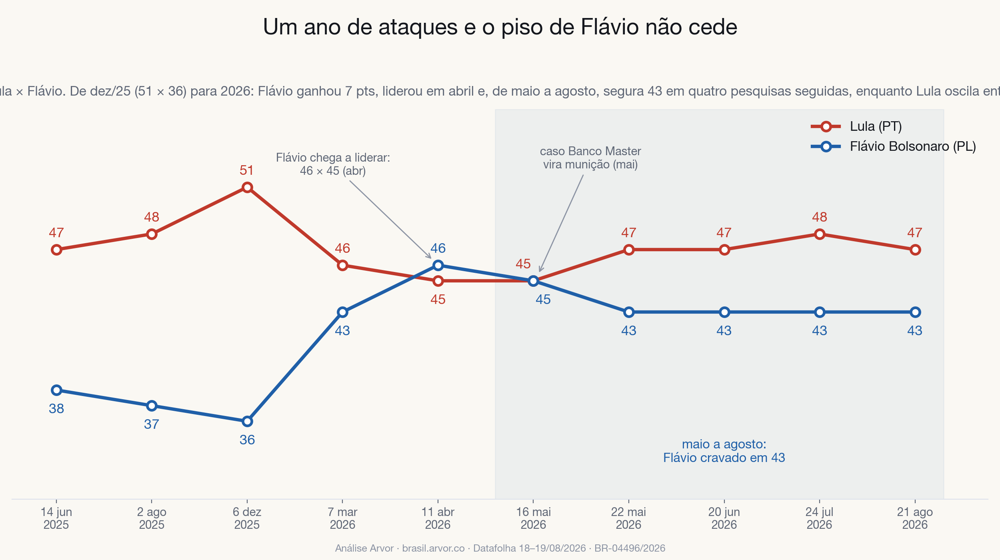
Cap. 02
Trinta pontos do eleitorado ainda não escolheram
O Datafolha pergunta a cada eleitor que citou um voto se aquele voto pode mudar. A resposta ocupa a página 12 inteira do relatório e não entrou em nenhuma manchete. Ela mede o tamanho real da disputa, e o tamanho real da disputa é cinco vezes a diferença que virou notícia.
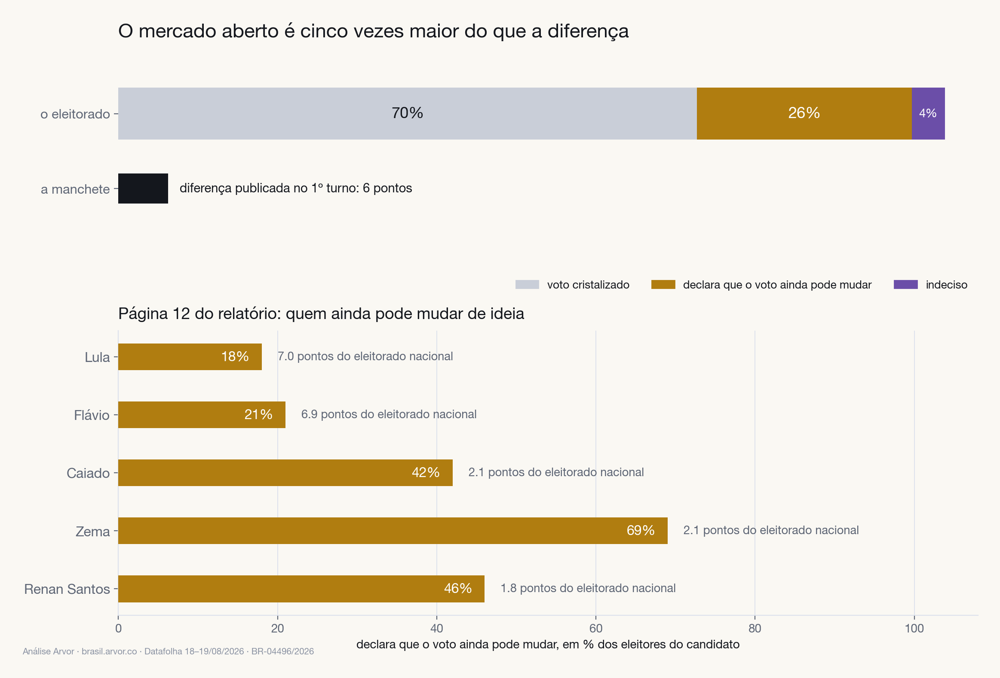
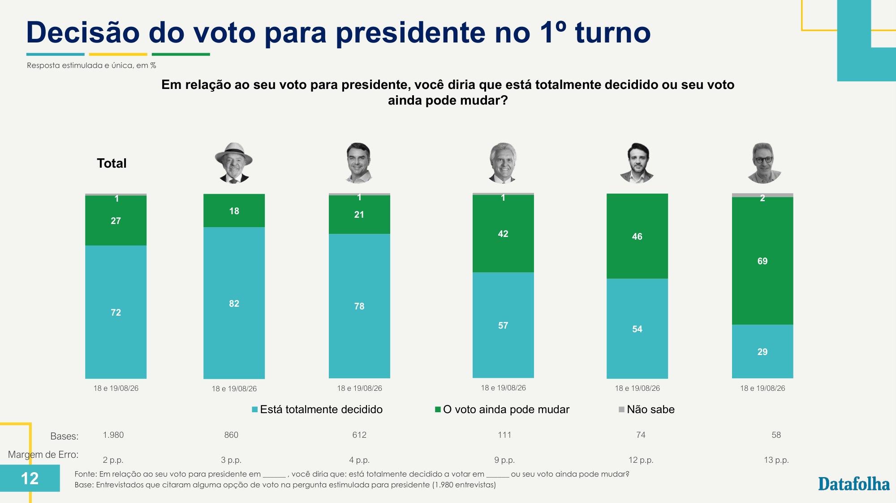
| Candidato | Entrevistas | Voto | Pode mudar | Pontos do eleitorado |
|---|---|---|---|---|
| Lula (PT) | 860 | 39% | 18% | 7,0 |
| Flávio Bolsonaro (PL) | 612 | 33% | 21% | 6,9 |
| Ronaldo Caiado (PSD) | 111 | 5% | 42% | 2,1 |
| Zema (NOVO) | 58 | 3% | 69% | 2,1 |
| Renan Santos (MISSÃO) | 74 | 4% | 46% | 1,8 |
49% × 17%
O eleitorado móvel tem endereço. Entre quem não se declara nem bolsonarista nem petista, 49% dizem que o voto pode mudar. Entre quem tem 60 anos ou mais, 17%. Entre quem não tem partido, 40%. Entre quem prefere o PL, 11%. A disputa por convencimento acontece num pedaço específico do país, e esse pedaço é jovem, urbano, feminino e sem filiação.
| Recorte | Pode mudar | Recorte | Pode mudar |
|---|---|---|---|
| Não alinhados | 49% | Nordeste | 20% |
| Sem partido | 40% | Fundamental | 20% |
| 16 a 24 anos | 39% | Petistas | 19% |
| 25 a 34 anos | 33% | 60 anos ou mais | 17% |
| Mulheres | 32% | PT | 16% |
| Região metropolitana | 31% | PL | 11% |
Leitura calibrada
Poder mudar não é ir para o outro lado. A pergunta mede disponibilidade declarada, não probabilidade de migração. Boa parte desses trinta pontos vai terminar em branco, nulo ou abstenção, e não na urna do adversário. O achado correto é outro e é mais duro: a eleição publicada como uma diferença de seis pontos é, pelo próprio instrumento do instituto, uma disputa por trinta. Uma nota de leitura: o relatório mede 27% sobre a base de quem citou algum voto, que exclui os indecisos. Sobre o eleitorado inteiro, isso equivale a 26%, e é assim que os números aparecem aqui sempre que a comparação for com o placar nacional.
Cap. 03
A diferença em campo é 12,1 pontos. A publicada é 6.
A linha de bases da página 12 diz, com todas as letras, entrevistas. A linha equivalente do anexo diz base ponderada. São duas grandezas diferentes sob rótulos quase iguais, e a distância entre elas é metade da diferença do primeiro turno.
A prova está no próprio documento
A pergunta sobre motivação do voto aparece duas vezes no mesmo PDF. Na divulgação, página 13, a base é 1.836 entrevistas. No anexo de tabelas cruzadas, página 27 de 29, a mesma pergunta tem base ponderada 1.850. Uma pergunta, um campo, dois números. A leitura compatível com os dois é a que o próprio texto da página 13 declara: a divulgação conta entrevistas realizadas e o anexo conta base ponderada. O relatório nunca diz ao leitor que os dois rótulos medem coisas diferentes.
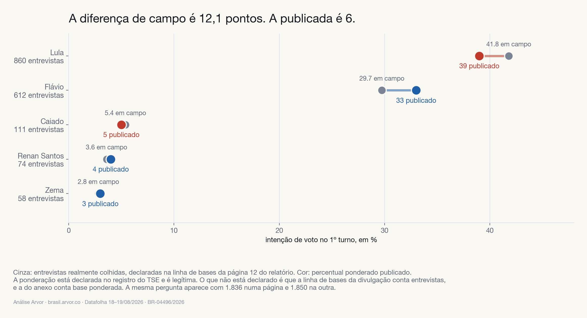
| Candidato | Entrevistas | Campo | Publicado | Efeito do peso |
|---|---|---|---|---|
| Lula (PT) | 860 | 41,79% | 39% | −2,79 |
| Flávio Bolsonaro (PL) | 612 | 29,74% | 33% | +3,26 |
| Ronaldo Caiado (PSD) | 111 | 5,39% | 5% | −0,39 |
| Renan Santos (MISSÃO) | 74 | 3,60% | 4% | +0,40 |
| Zema (NOVO) | 58 | 2,82% | 3% | +0,18 |
| Diferença Lula menos Flávio | 12,05 | 6,00 | −6,05 |
O achado que trabalha contra a nossa própria tese
Este dossiê tem lado e não esconde. Por isso este parágrafo importa mais que os outros: a ponderação do Datafolha, nesta margem, favorece o candidato da oposição. Em campo, a diferença do primeiro turno é de doze pontos. Publicada, é de seis. Quem repete que o instituto opera para inflar o presidente precisa explicar por que o peso reduziu a vantagem dele pela metade. Publicamos porque o padrão de prova tem de ser o mesmo para pesquisa favorável e desfavorável, ou não é padrão de prova.
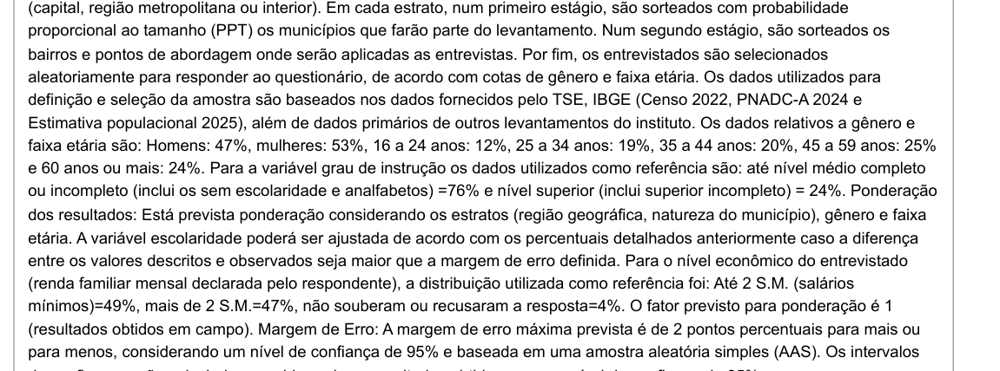
1 ponto
É o desvio máximo entre o perfil ponderado publicado e as cotas declaradas ao TSE, em gênero, idade, escolaridade e renda. Contra o próprio plano registrado, a pesquisa está em ordem.
6,05 pontos
É quanto a ponderação retira da diferença do primeiro turno. O leitor não tem como saber, porque a linha de bases da divulgação e a do anexo usam rótulos parecidos para coisas diferentes.
2º turno indisponível
O relatório só publica base de entrevistas para as duas perguntas da página 12 e 13. Não há como reconstruir o campo bruto do segundo turno com os documentos públicos.
Como sabemos que essas bases são de campo, e não ponderadas
Três verificações independentes, todas dentro do PDF oficial. Primeira: a página 13 chama a própria base de 1.836 entrevistas e o anexo dá base ponderada 1.850 para a mesma pergunta. Segunda: 860 sobre 2.058 é 41,8%, e nenhuma tabela ponderada do relatório atribui 41,8% a Lula em qualquer cenário de primeiro turno. Terceira: reconstruindo o voto de Lula a partir do cruzamento por identificação política, com as bases ponderadas do anexo, chega-se a 782 eleitores ponderados, próximo dos 803 que 39% de 2.058 exige, e distante dos 860 impressos na divulgação.
A ponderação é legítima, está registrada no TSE e é o procedimento padrão da indústria. O que este capítulo mostra não é irregularidade: é opacidade. Duas grandezas diferentes recebem rótulos quase idênticos em páginas vizinhas do mesmo arquivo, e o efeito disso sobre a leitura pública é de seis pontos.
Cap. 04
A pesquisa obedece à meta. A meta é que envelheceu.
O registro usa PNADC anual 2024 e fixa 49% até dois salários mínimos. O perfil ponderado chega a 50%. Não é falha de execução contra o plano registrado. O problema é a régua de 2024 diante da PNADC anual 2025, já disponível.
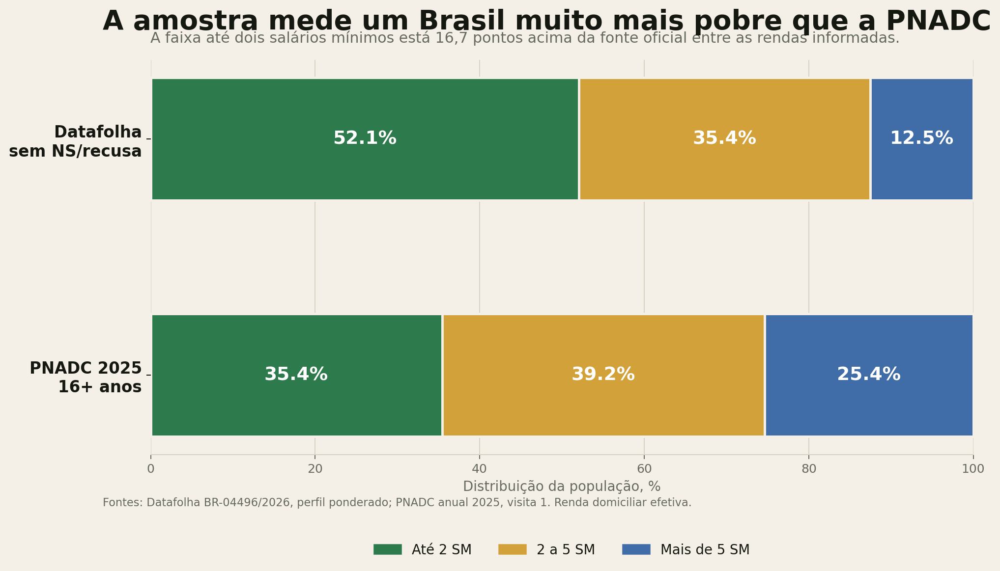
50 / 34 / 12 / 4
Até 2 SM, de 2 a 5 SM, mais de 5 SM e não sabe ou recusa. É o perfil publicado na página 5.
35,4 / 39,2 / 25,4
Rendimento domiciliar efetivo em salários mínimos, pessoas de 16 anos ou mais, visita 1.
cerca de 300 casos
O excesso ponderado na faixa até 2 SM equivale a 300 entrevistas sobre n=2.058. É escala, não contagem literal de pessoas erradas.
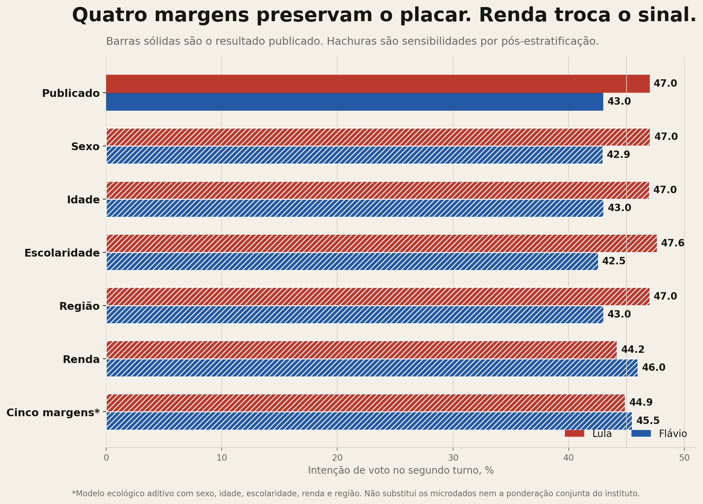
O resultado que manda no relatório
A inversão não depende do arredondamento das células impressas. Em 10 mil simulações, perturbando cada célula em ±0,5 ponto e renormalizando as linhas, Flávio fica à frente em 100% dos sorteios. O intervalo simulado do gap Lula menos Flávio vai de −1,96 a −1,61. Bastam 69,2% do caminho entre a renda Datafolha e a renda PNADC para zerar o saldo publicado.
Por que isto continua sendo sensibilidade, não correção
Renda declarada numa entrevista de rua não é idêntica ao rendimento domiciliar captado pelo IBGE. A ponderação real é conjunta e pode conter interações entre renda, escolaridade, idade, região, religião e comportamento eleitoral. As tabelas públicas são marginais e arredondadas. O exercício responde a uma pergunta rigorosa e limitada: quanto o topline muda se a única alteração for a distribuição de renda?
Série 2026
Quatro ondas, a mesma régua. A vantagem desaparece.
Maio, junho, julho e agosto publicam o segundo turno por renda. Aplicar a mesma PNADC 2025 a cada cruzamento separa movimento eleitoral de mudança na composição econômica medida em cada onda. O resultado é estável e incômodo: a série publicada dá Lula +4 a +5; a série padronizada produz empate ou Flávio numericamente à frente.

| Campo | Publicado | Saldo publicado | PNADC | Saldo padronizado |
|---|---|---|---|---|
| 20–21/mai | 47,00 × 43,00 | Lula +4,00 | 43,60 × 46,41 | Flávio +2,81 |
| 17–18/jun | 47,00 × 43,00 | Lula +4,00 | 45,21 × 45,37 | Empate, Flávio +0,16 |
| 22–23/jul | 48,00 × 43,00 | Lula +5,00 | 45,48 × 45,48 | Empate, diferença <0,01 |
| 18–19/ago | 47,00 × 43,00 | Lula +4,00 | 44,19 × 45,97 | Flávio +1,78 |
O nome correto do achado
Esta é a tendência sob uma régua oficial comum, não a “tendência real da eleição”. Ela mostra que a vantagem publicada depende da margem de renda nas quatro ondas. Maio e agosto invertem mesmo quando as células impressas variam em ±0,5 ponto. Junho fica no limite; julho é indeterminado pelo próprio arredondamento. Sem microdados, pesos individuais e deff, a série não identifica quem está à frente no eleitorado.
Cap. 05
Quatro margens passam. Uma domina o erro.
Sexo, idade e região foram comparados ao eleitorado atual do TSE. Escolaridade e renda foram comparadas à PNADC, porque escolaridade cadastral do TSE pode estar desatualizada e o TSE não mede renda.
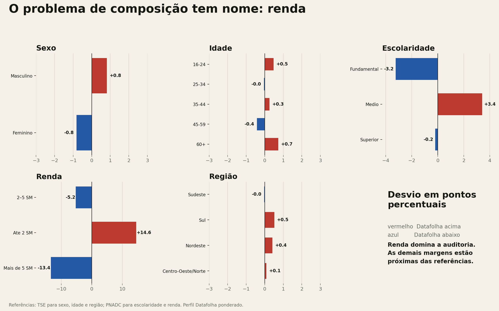
| Margem | Fonte adequada | Maior desvio | Lula | Flávio | Leitura |
|---|---|---|---|---|---|
| Sexo | TSE, jun./2026 | 0,82 | 47,04 | 42,95 | Imaterial |
| Idade | TSE, jun./2026 | 0,73 | 46,97 | 43,02 | Imaterial |
| Escolaridade | PNADC 2026-T1 | 3,42 | 47,64 | 42,55 | Amplia Lula |
| Região | TSE, jun./2026 | 0,52 | 47,00 | 43,01 | Imaterial |
| Renda | PNADC anual 2025 | 14,57 | 44,19 | 45,97 | Inverte |
Universos diferentes, escolha deliberada
A PNADC 16+ tem 16,0% entre 16 e 24 anos; o TSE tem 12,5%, porque o alistamento de 16 e 17 anos é facultativo. O Datafolha marca 13%. Compará-lo apenas à PNADC produziria um falso alerta de idade. Para pesquisa eleitoral, a régua correta aqui é o eleitorado.
Cap. 06
Seis nomes que quase ninguém sabe citar têm 9,7% de rejeição
A pergunta de rejeição é estimulada, múltipla, com cartão e com insistência: o entrevistador pergunta e qual mais? até o entrevistado parar. Somadas, as recusas dão 223% da amostra, ou 2,23 nomes rejeitados por eleitor. Antes de ler qualquer ranking de rejeição, é preciso saber quanto o instrumento fabrica sozinho.
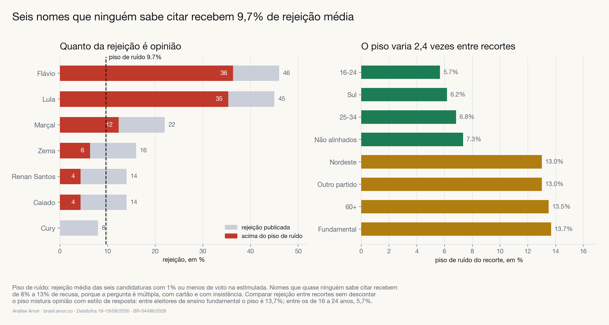
9,67%
Média de rejeição de Samara, Rui Costa Pimenta, Edmilson Costa, Wilson Grassi, Clariana Barão e Hertz Dias. Juntos, esses seis nomes somam 4% de intenção de voto.
Augusto Cury
Tem 8% de rejeição, menos do que a média dos desconhecidos. O relatório o coloca em décimo terceiro num ranking de treze. O número não distingue o escritor de um nome que ninguém ouviu falar.
223%
Total das rejeições sobre uma base de 100%. Cada eleitor recusa 2,2 nomes em média. É medida de quanto o entrevistado responde, não apenas de quanto ele rejeita.
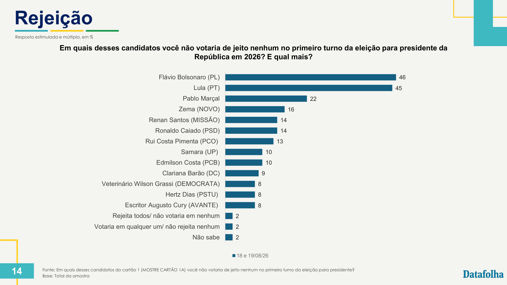
| Candidato | Publicada | Acima do piso | Voto no 1º turno |
|---|---|---|---|
| Flávio Bolsonaro (PL) | 46% | 36,3 | 33% |
| Lula (PT) | 45% | 35,3 | 39% |
| Pablo Marçal (PRTB) | 22% | 12,3 | 2% |
| Zema (NOVO) | 16% | 6,3 | 3% |
| Renan Santos (MISSÃO) | 14% | 4,3 | 4% |
| Ronaldo Caiado (PSD) | 14% | 4,3 | 5% |
| Augusto Cury (AVANTE) | 8% | −1,7 | 2% |
A inversão que o piso revela
Na tabela publicada, a rejeição a Flávio cresce com a idade: 46% entre 16 e 24 anos, 50% entre os de 60 ou mais. Só que o piso de ruído também cresce com a idade, de 5,7% para 13,5%. Descontado o piso, a rejeição a ele é 40,3 entre os jovens e 36,5 entre os idosos. A ordem se inverte. O mesmo vale para escolaridade: publicada, a rejeição a Lula é 33% no ensino fundamental; acima do piso, 19,3%, a menor de toda a pesquisa. Comparar rejeição entre recortes sem descontar o piso mistura opinião com estilo de resposta.
O que o piso não faz
Descontar o piso não corrige a pesquisa nem produz um número melhor. É um teste de robustez: mostra quanto de cada rejeição publicada sobrevive quando se retira o que o instrumento produziria contra qualquer nome. Os dois primeiros colocados sobrevivem inteiros e continuam separados por um ponto. Do terceiro em diante, o ranking perde sentido.
Cap. 07
Flávio é o voto útil. Quem mede é o próprio Datafolha.
O relatório não publica a matriz candidato por candidato do primeiro para o segundo turno. Publica, porém, quatro segundos turnos na mesma amostra. Eles fixam o limite agregado: Lula quase não se move; a oposição perde quando troca Flávio por qualquer alternativa.
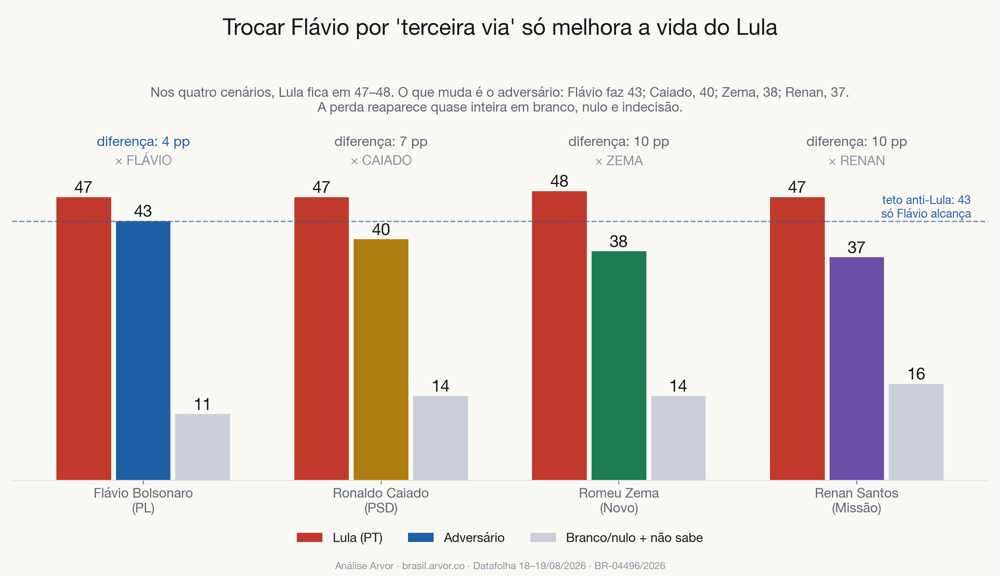
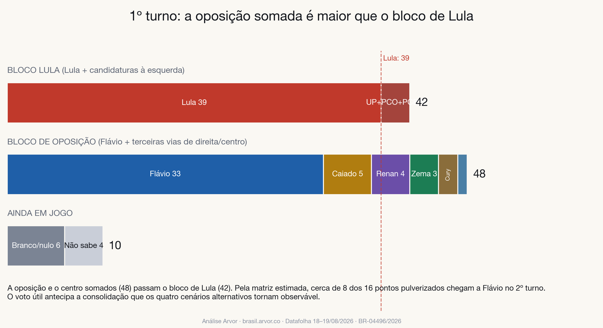
47–48 Lula
O incumbente fica parado nos quatro confrontos. Trocar o adversário não lhe entrega votos diretamente na escala agregada.
9,8 × 7,7
Pontos captados fora das bases de primeiro turno por Flávio e Lula. Razão de 1,27:1, contra 1,48:1 em julho.
fragmentar ajuda Lula
Com Lula estável, cada ponto perdido por Flávio em alternativa adversária termina principalmente na não escolha.
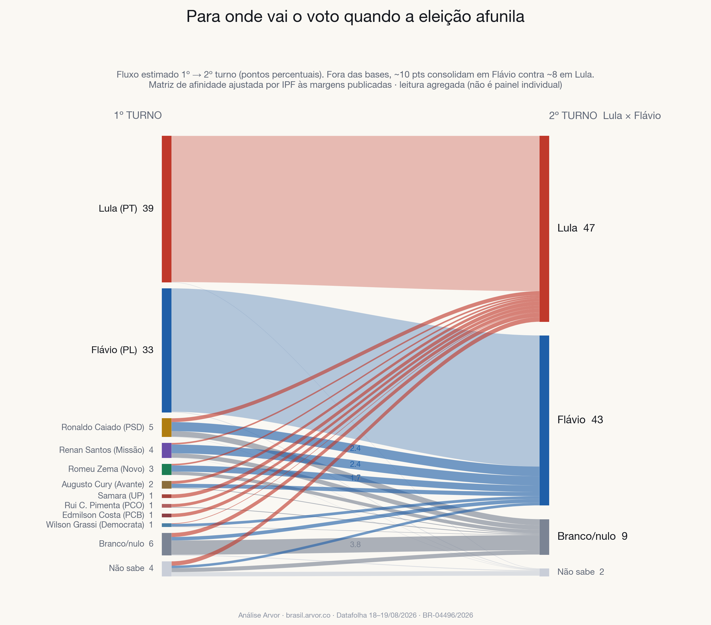
Conclusão estratégica
O caminho natural da oposição é concentrar cedo em Flávio. O caminho natural de Lula é preservar a fragmentação e a dúvida sobre viabilidade. A evidência forte não é cada fita estimada. É a experiência que o instituto já fez: substituir Flávio derruba o adversário entre 3 e 6 pontos sem deslocar Lula.
Cap. 08
Sete pontos de voto anti-governo que a oposição não recolheu
Cinquenta por cento desaprovam o trabalho do presidente. Quarenta e três por cento votam no adversário no segundo turno. A diferença é o vão: eleitores que já rejeitam o governo e ainda não escolheram quem o substitui. As duas metades da conta vêm do mesmo relatório, do mesmo campo e do mesmo recorte.
25 pts
O maior vão da pesquisa está entre os não alinhados. Sessenta e três por cento desaprovam o governo. Trinta e oito votam no adversário. Trinta por cento não escolhem ninguém no segundo turno. É um quarto do eleitorado, e quase um terço dele não escolhe ninguém.
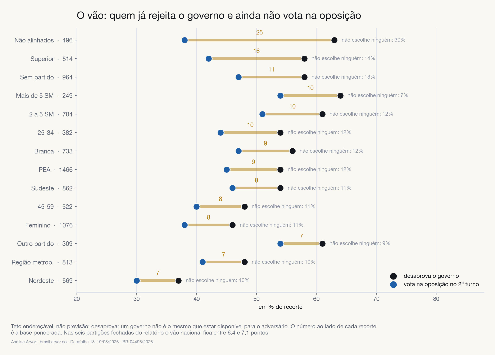
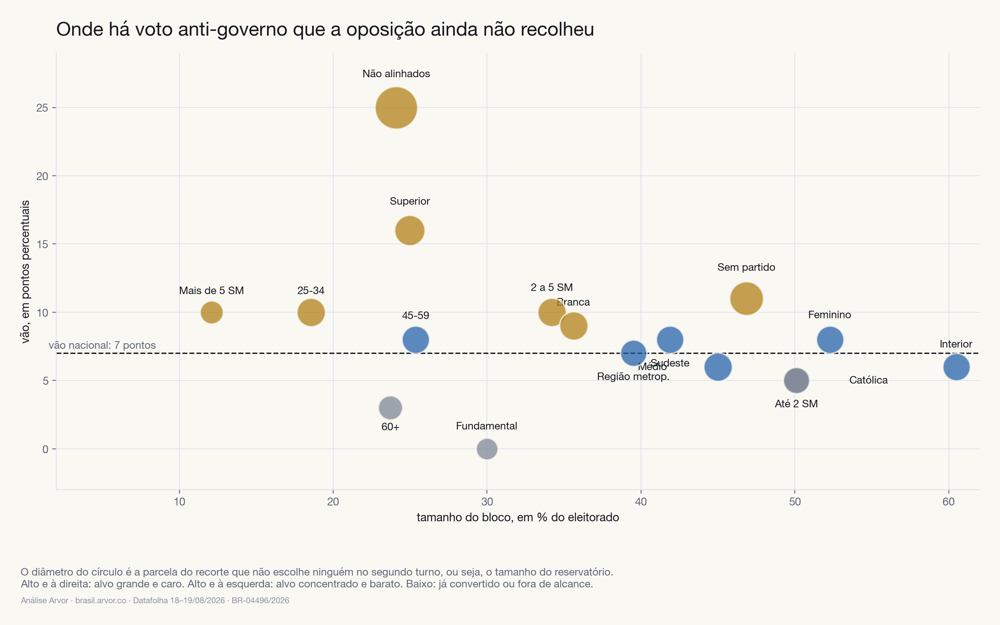
| Recorte | Base | Desaprova | Oposição | Vão | Não escolhe |
|---|---|---|---|---|---|
| Não alinhados | 496 | 63 | 38 | 25 | 30% |
| Ensino superior | 514 | 58 | 42 | 16 | 14% |
| Sem partido | 964 | 58 | 47 | 11 | 18% |
| 25 a 34 anos | 382 | 54 | 44 | 10 | 12% |
| 2 a 5 salários | 704 | 61 | 51 | 10 | 12% |
| Mais de 5 salários | 249 | 64 | 54 | 10 | 7% |
| Ocupados (PEA) | 1.466 | 54 | 45 | 9 | 12% |
| Ensino fundamental | 617 | 35 | 35 | 0 | 6% |
| Fora da PEA | 592 | 38 | 38 | 0 | 7% |
| Bolsonaristas | 697 | 88 | 90 | −2 | 4% |
O vão é teto endereçável, não previsão
Desaprovar um governo não é o mesmo que estar disponível para o adversário. Muita gente desaprova e vota no incumbente assim mesmo, e muita gente desaprova e não vota em ninguém. O número mede o limite superior de conversão dentro de cada recorte, com as duas metades saindo da mesma amostra. Nas seis partições fechadas do relatório, gênero, idade, escolaridade, ocupação, região e natureza do município, o vão nacional fica entre 6,40 e 7,05 pontos. É estável porque não depende de qual corte se usa.
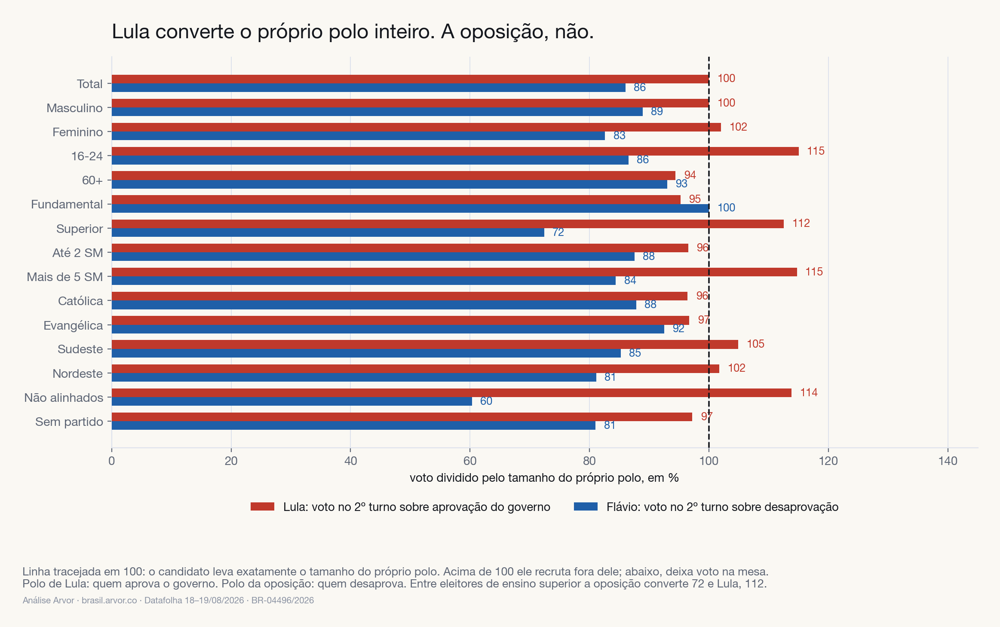
Onde o vão é zero
Entre eleitores de ensino fundamental e entre quem está fora da população economicamente ativa, o vão é exatamente zero: a oposição já leva tudo o que a desaprovação oferece nesses grupos. Entre bolsonaristas declarados e entre quem prefere o PL, o vão é negativo, ou seja, há gente que aprova o governo e vota contra ele mesmo assim. Todo voto anti-governo ainda não recolhido está no eleitorado escolarizado, ocupado, de renda média e sem alinhamento declarado. Não é o eleitorado que a oposição vem tentando convencer.
Cap. 09
A eleição mora nos 47% sem partido
As bases partidárias estão fechadas. O PT entrega 98% a Lula; o PL, 99% a Flávio. O maior grupo da amostra não prefere partido algum e dá a Flávio sua vantagem mais útil.
47 × 35
Segundo turno entre eleitores sem partido: Flávio 47, Lula 35, branco ou nulo 15, indecisos 3. No primeiro turno, Flávio tem 34 e Lula 24. Quarenta por cento dizem que o voto ainda pode mudar; 39% dizem votar para impedir outro candidato.
38 × 33
Segundo turno entre os sem alinhamento ideológico: Flávio 38, Lula 33, branco ou nulo 26, indecisos 4. Quase metade, 49%, admite mudar o voto. É o maior reservatório de persuasão e abstenção decisória do relatório.
| Preferência | Peso no perfil | Lula | Flávio | Diagnóstico |
|---|---|---|---|---|
| PT | 24% | 98 | 2 | Base fechada |
| PL | 12% | 1 | 99 | Base fechada |
| Outro partido | 5% | 37 | 54 | Vantagem Flávio |
| Nenhum | 47% | 35 | 47 | Maior terreno aberto |
Outro corte ignorado
Renan Santos tem 4% no total e 11% entre 16 e 24 anos. É quase o triplo. Isso não o transforma em finalista; mostra uma candidatura geracional que o topline nacional esconde.
Cap. 10
O município repete. O setor gira.
Agosto mantém a espinha municipal da onda anterior e troca a maior parte dos setores censitários. Isso é compatível com uma amostra mestra de municípios e rotação local, mas o protocolo e as probabilidades de inclusão continuam ausentes.
49 × 41 nas metrópoles
Capital e região metropolitana são 40% da amostra e geram 72,7% do saldo nacional. No interior, 60% da amostra, Lula faz 46 e Flávio 44.
282 × 7; 6 × 14
O anexo tem 282 setores com sete entrevistas e seis com catorze, média 7,15. A margem da capa não informa a correlação interna desses blocos.
Divergência documental
O relatório e o registro declaram 128 municípios. O anexo territorial soma 129 códigos municipais distintos. As 2.058 entrevistas fecham e não há setor duplicado. A providência correta é reconciliar a lista com o número declarado, não inferir fraude.
Cap. 11
O voto vem antes do roteiro. A motivação vem torta.
A ordem do questionário protege os toplines de boa parte do efeito de contexto. A pergunta que tenta explicar o voto, porém, oferece uma alternativa virtuosa e dupla contra uma alternativa negativa e simples.
Bom
baixo risco
Voto antes de rejeição, governo e ideologia
Espontâneo, estimulado e segundo turno aparecem antes de rejeição, avaliação do governo, partido, posição ideológica, escolaridade e renda.
Bom
controle
Rodízio declarado
Cartões, cenários de segundo turno e nomes dentro dos cenários têm rotação. O instrumento reduz efeito de posição, embora não publique o log executado.
Problema
semântico
“Melhores propostas e mais preparado”
A resposta reúne duas virtudes e convida à autoimagem positiva. Compete com “para evitar que outro candidato seja eleito”, formulada como motivação negativa. O placar 61 × 30 não isola proposta, preparo ou voto estratégico.
Limite
editorial
“Se a eleição fosse hoje”
A formulação é condicional. Manchete que transforma o número em previsão elimina uma hipótese central da pergunta.
Sem efeito
ordem
Interferência estrangeira vem depois
A pergunta aparece após voto, rejeição e avaliação do governo. Ela não pode ter induzido os toplines que a antecedem.
O encaixe linguístico
O questionário produz uma cifra com embalagem moral pronta: 61% escolhem a alternativa de “propostas” e “preparo”. Uma manchete pode então repetir “eleitor vota por propostas” sem contar que preparo estava no mesmo pacote e que a alternativa concorrente era votar “contra”. A narrativa nasce na arquitetura da resposta, antes da redação jornalística.
Cap. 12
Oito perguntas foram aplicadas. Nenhuma foi publicada.
O questionário registrado no TSE tem oito páginas. O relatório tem cinquenta e uma. Entre uma lista e outra sobra um conjunto de perguntas feitas a 2.058 eleitores que não aparecem em nenhuma tabela, em nenhum gráfico e em nenhuma manchete. Uma delas é a única variável da pesquisa que pode ser conferida contra um resultado real.
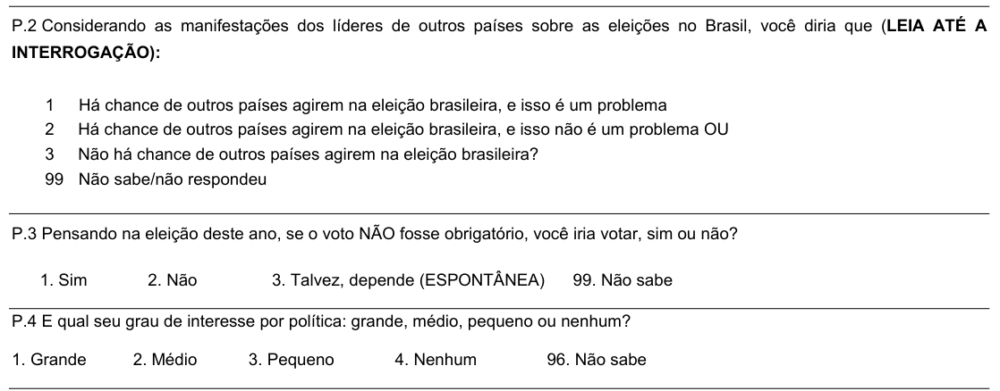
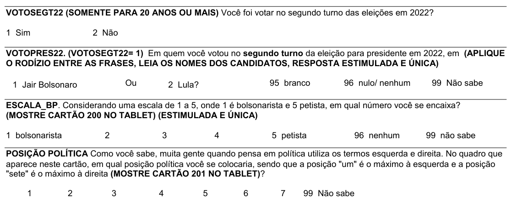
Ausência crítica
validação
Em quem você votou no 2º turno de 2022?
É a única variável da pesquisa que pode ser conferida contra um resultado real e conhecido. Se a amostra lembra 2022 fora da proporção oficial, o desvio fica visível antes de qualquer ponderação. O Datafolha coletou e não publicou nem a distribuição nem o cruzamento.
Ausência crítica
enquadramento
Escala de esquerda a direita, de 1 a 7
O relatório publica a escala de 1 a 5 cujas pontas são dois nomes próprios, bolsonarista e petista, e agrupa tudo o que sobra em não alinhados. A escala ideológica de sete pontos, que separa posição política de identificação pessoal, foi perguntada logo em seguida e não aparece.
Ausência crítica
comparecimento
Se o voto não fosse obrigatório, você iria votar?
Mede intenção de comparecimento. Sem ela, todo percentual do relatório supõe que o eleitorado que responde é idêntico ao eleitorado que vota. Numa eleição decidida por seis pontos, essa suposição vale mais que muitos cruzamentos publicados.
Ausência
soberania
Interferência de outros países na eleição
Pergunta de soberania eleitoral, com três alternativas que separam quem vê risco de quem vê risco e não se importa. Aplicada a 2.058 eleitores, ausente do relatório.
Ausência
qualidade
Grau de interesse por política
Separa opinião formada de resposta de cortesia. É o filtro clássico para ler indeciso, branco e nulo, e para saber quanto do piso de ruído da rejeição vem de quem não acompanha a disputa.
Compressão
granularidade
Qual o nome da igreja que você frequenta?
O questionário lista dezenas de denominações, de Assembleia de Deus a Igreja Universal, com códigos próprios. O relatório publica uma coluna: evangélica. O bloco que mais se moveu na política brasileira nos últimos dez anos aparece como um bloco só.
Compressão
granularidade
Até que ano da escola você estudou?
Oito níveis coletados, de analfabeto a pós-graduação. Três publicados. Pós-graduação e analfabetismo desaparecem dentro de superior e fundamental.
Não declarado
painel
Autoriza guardar seu nome e telefone para pesquisas futuras?
Constrói painel de recontato. A taxa de aceite nunca é publicada e afeta a comparabilidade entre ondas, porque quem aceita ser recontatado não é um recorte aleatório do eleitorado.
Cobertura
Um em cada quatro entrevistados não tem coluna de religião
O anexo cruza cada pergunta por onze recortes. Só seis deles cobrem a amostra inteira. Nos outros, uma parte dos entrevistados simplesmente não aparece em coluna nenhuma, e o relatório não avisa quantos são.
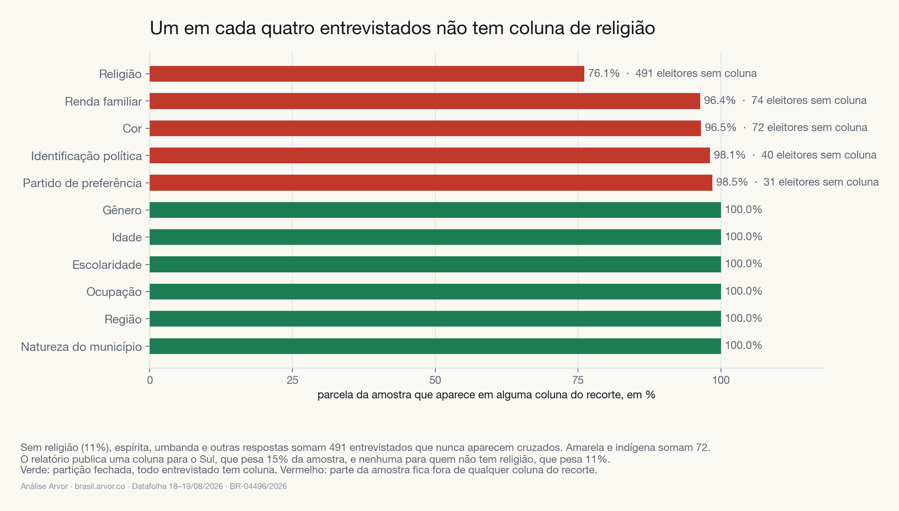
491 eleitores
Quem não tem religião pesa 11% do perfil, espírita 2%, umbanda 2%, outras respostas 5%. O relatório publica coluna para o Sul, que pesa 15%, e nenhuma para quem não tem religião, que pesa 11%.
72 eleitores
Amarela e indígena aparecem no perfil da amostra com 2% cada e somem de todos os cruzamentos. A margem de erro por segmento, na página 3, também só lista branca, parda e preta.
74 eleitores
Quem recusou ou não soube dizer a renda entra no perfil e sai das tabelas. É o mesmo grupo que a ponderação de renda precisa tratar de alguma forma que o relatório não descreve.
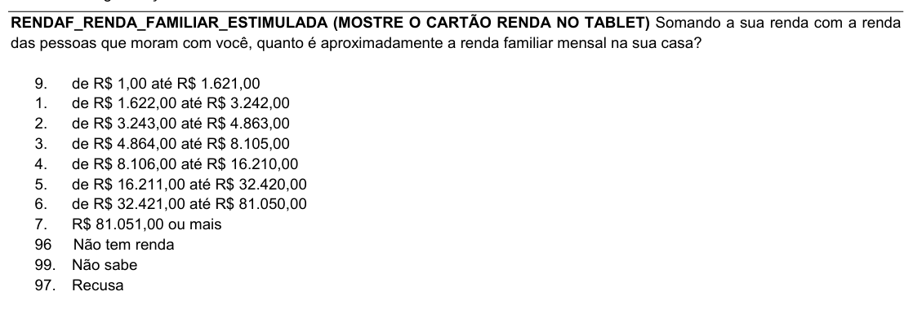
Cap. 13
A mesma pesquisa, em português
Nada aqui exige estatística. Exige só que as palavras signifiquem o que significam. Esta é a tradução de cada termo usado neste dossiê, com o exemplo do dia a dia que o torna óbvio e a frase que ele desmonta.
Margem de erro
você lê: “margem de dois pontos”Você prova a sopa com uma colher. A colher diz muito sobre a panela, mas não diz tudo. A margem é o quanto a colher pode enganar.
O que ela não é: uma faixa dentro da qual todo empate vira empate. Ela vale para cada número sozinho, não para a distância entre dois.
Margem da diferença
quase ninguém escreve issoSe cada colher pode errar, a subtração de duas colheres pode errar mais. Comparar dois candidatos tem incerteza maior do que medir um deles.
No caso: a margem da capa é 2 pontos. A margem da diferença de 47 × 43 é 4,095. Por isso o intervalo do saldo já inclui o zero.
Ponderação
você lê: “resultado ponderado”O campo trouxe gente demais de um tipo e de menos de outro. O instituto multiplica cada entrevista por um número para que o retrato final tenha a mesma cara do país.
Legítimo e padrão. O problema aparece quando a conta muda o resultado e o leitor não sabe que houve conta.
Base ponderada
você lê: “base: 1.836”Entrevista é gente. Base ponderada é gente depois de multiplicada pelo peso. São duas contagens diferentes do mesmo grupo.
No caso: a mesma pergunta aparece com 1.836 na página 13 e 1.850 na página 27 do anexo. Uma conta pessoas, a outra conta pesos.
Efeito de desenho
você nunca lê, e deveriaEntrevistar sete pessoas no mesmo quarteirão não é o mesmo que entrevistar sete pessoas em sete cidades. Vizinhos se parecem, então sete vizinhos valem menos que sete estranhos.
No caso: são 288 setores censitários com cerca de sete entrevistas cada. O relatório não informa quanto isso encolhe a amostra efetiva.
Piso de ruído
método desta casaSe você perguntar a alguém se ele rejeita o candidato Fulano de Tal, que ele nunca ouviu falar, uma parte responde que sim. Esse “sim” não é opinião, é reflexo.
No caso: seis nomes com 1% de voto recebem 9,7% de rejeição média. Qualquer rejeição abaixo disso é ruído.
Votos válidos
você lê: “nos válidos, 43 × 37”É o placar depois de tirar branco, nulo e indeciso da conta. Muda o tamanho do bolo, não o tamanho das fatias entre si.
Cuidado: comparar duas pesquisas em percentual bruto quando uma tem 11% de brancos e a outra tem 2% compara réguas diferentes.
Substituição medida
método desta casaO instituto perguntou quatro segundos turnos diferentes para as mesmas pessoas, no mesmo dia. Trocar o adversário e ver o que acontece é um experimento, não um chute.
Resultado: Lula fica entre 47 e 48 nos quatro. Quem muda é o adversário, de 43 para 37, e a não escolha, de 11 para 16.
O vão
método desta casaQuanta gente já reclama do restaurante e ainda assim não pediu a conta. Desaprovar o governo e não votar no adversário é ficar sentado.
Rótulo obrigatório: é teto endereçável, não previsão. Mede até onde daria para ir, não até onde se vai.
Como conferir tudo isto sozinho
Todo número deste dossiê tem página. O relatório completo, o questionário aplicado, o registro no TSE e o anexo de bairros estão no PesqEle, o sistema público do Tribunal Superior Eleitoral, e qualquer pessoa baixa sem cadastro. Os scripts que extraem as tabelas e refazem as contas estão no repositório aberto desta casa. Se algum número aqui estiver errado, ele é falsificável em vinte minutos, e é assim que tem de ser.
Cap. 14
A certeza nasce no relatório. A cobertura precisa qualificá-la.
Nenhuma manchete recuperada de G1, Folha ou UOL diz literalmente “Lula lidera o segundo turno”. Os títulos são numéricos. A formulação de vantagem aparece no título do próprio relatório Datafolha; “o petista lidera” aparece no corpo da Folha. Quando quatro pontos têm margem de ±4,10, essa distinção entre manchete, corpo e documento-fonte precisa ficar visível.
“Lula lidera no 1º turno e tem vantagem de quatro pontos sobre Flávio Bolsonaro no 2º turno”
A primeira metade é sustentada: o saldo de seis pontos no primeiro turno tem intervalo de 95% acima de zero. A segunda descreve uma vantagem numérica de quatro pontos, mas não uma liderança estatisticamente identificada: o intervalo do saldo no segundo turno vai de −0,10 a +8,10. Esta é a formulação original que o relatório entrega à cobertura.
Regra objetiva
Título numérico sem intervalo é verdadeiro, mas materialmente incompleto. No material examinado, “vantagem de quatro pontos” é título do relatório; “o petista lidera por 47% a 43%” é frase do corpo da Folha, não manchete. Ambas precisam da mesma qualificação: vantagem numérica não equivale a liderança identificada a 95%. Para “38 vai a 41”, o erro da mudança entre duas amostras é ainda maior que o erro de cada número isolado.
“Datafolha, 2º turno: Lula, 47%; Flávio Bolsonaro, 43%”
Placar fiel. Falta a hipótese “se fosse hoje” e falta informar que o intervalo da diferença inclui zero.
“Datafolha, 1º turno: Lula, 39%; Flávio, 33%; Caiado, 5%”
Placar fiel e sem verbo causal. O saldo de seis pontos é mais robusto que o de segundo turno.
“Lula marca 39% no 1º turno, e Flávio Bolsonaro tem 33%”
Título numérico correto. A formulação problemática aparece na primeira frase do corpo, destacada ao lado.
“Numa segunda rodada, o petista lidera por 47% a 43%.”
A frase transforma uma vantagem numérica em liderança identificada. O intervalo de 95% da diferença vai de −0,10 a +8,10 e não permite cravar essa liderança.
“Lula lidera disputa com 39% das intenções; Flávio registra 33%”
Aqui “lidera” é defensável. A manchete se refere ao primeiro turno, cuja diferença continua positiva até deff 2. No corpo, porém, a Band escreve que “Lula mantém a liderança sobre Flávio Bolsonaro por 47% a 43%”. Essa segunda formulação não é sustentada a 95%.
“Lula mantém liderança e oscilações de um ponto não indicam mudança na disputa”
O título usa “liderança” para o primeiro turno, 39 × 33, e acerta ao recusar significado às oscilações de um ponto. Não serve como prova de liderança estatística no segundo turno.
“Lula lidera entre mulheres e pobres; Flávio, entre evangélicos”
O verbo descreve segmentos, não o placar nacional. As diferenças são grandes nos cortes citados, mas cada recorte tem margem própria e maior que a nacional.
“Avaliação negativa de Lula vai de 38% para 41%”
O verbo “vai” crava direção. O próprio subtítulo admite oscilação dentro da margem. Comparação entre ondas exige incerteza maior que a de uma proporção.
“Popularidade de Lula derrapa e mantém disputa com Flávio equilibrada”
“Equilibrada” cabe nos dados. “Derrapa” é interpretação de uma oscilação de rodada, não fato estatístico identificado.
“Lula e Flávio têm dificuldades em crescer”
A análise faz a ressalva correta: não há novidade estatística, e oscilações de um ponto não merecem narrativa.
“Lula tem 47% e Flávio soma 43% no 2º turno”
O texto acerta onde outros erram: chama o cenário de “limite do empate técnico”. Ainda cita ±2, que é a margem individual, mas evita transformar quatro pontos em liderança comprovada.
Quem pagou e quem publicou
As notas fiscais e o registro atribuem metade do custo à Folha de S.Paulo e metade à TV Globo: R$ 153.820,80 para cada. O UOL integra o Grupo Folha. Portanto, Folha e UOL pertencem ao mesmo ecossistema jornalístico nesta análise, embora o UOL não apareça como contratante jurídico separado nem como pagador em nota fiscal. O portal também republica material de agências; por isso, a manchete da Reuters hospedada no UOL está identificada como UOL, Reuters. A distinção correta é entre vínculo empresarial, contratação formal e autoria editorial, não entre veículos supostamente sem relação.
Cap. 15
As manchetes que os dados pediam
Nenhuma exige adivinhar intenção do instituto ou do veículo. Todas saem de tabelas publicadas, cálculos reproduzíveis e rótulos de evidência explícitos.
Datafolha mede 30 pontos do eleitorado ainda em aberto
Vinte e seis por cento dizem que o voto pode mudar e quatro por cento estão indecisos. A diferença noticiada foi de seis.
Em campo a diferença é 12,1 pontos; publicada, 6
A linha de bases da página 12 conta entrevistas. Nesta margem, o peso do instituto favorece a oposição.
Seis candidaturas têm rejeição igual ao ruído do instrumento
Nomes com 1% de voto recebem 9,7% de recusa média. Cury, com 8%, fica abaixo do próprio piso.
Sete pontos desaprovam o governo e não votam na oposição
São dezesseis pontos no ensino superior e vinte e cinco entre não alinhados. Zero no ensino fundamental.
O eleitor de Caiado, Renan e Zema vota por proposta, não por medo
63,6% do bloco declara voto propositivo e 50,1% admite mudar. É a maior reserva conversível da pesquisa.
O desafiante marca 43 no 2º turno há quatro ondas seguidas
E no 1º turno está em 33, o mesmo de março. A convergência de dez para seis pontos é queda do presidente.
Datafolha perguntou o voto de 2022 e não publicou
É a única variável conferível contra um resultado real. Também ficou de fora a escala ideológica de sete pontos.
491 entrevistados não aparecem em nenhuma coluna de religião
Sem religião pesa 11% do perfil e não tem coluna. O Sul, que pesa 15%, tem.
Renda oficial troca o sinal do segundo turno
47 × 43 vira 44,2 × 46,0 quando só a distribuição de renda é alinhada à PNADC 2025.
Com a mesma renda, vantagem de Lula some em quatro ondas
Maio e agosto invertem. Junho e julho viram empate sob a mesma PNADC 2025.
Segundo turno não tem líder a 95%; primeiro turno tem
O intervalo do saldo 2T cruza zero sob AAS. O saldo de seis pontos no 1T resiste até deff 2.
Trocar Flávio custa de 3 a 6 pontos à oposição
Lula fica entre 47 e 48 em quatro cenários; o adversário cai de 43 para 40, 38 ou 37.
Sem partido, Flávio marca 47 e Lula 35
É o maior grupo da pesquisa, 47% do perfil, e 40% dele admite mudar o voto.
Relatório declara 128 municípios; anexo lista 129 códigos
A divergência é documental e verificável. Precisa de reconciliação, não de especulação.
Renan Santos quase triplica entre eleitores de 16 a 24
São 11% no recorte jovem contra 4% no total, um sinal geracional escondido pelo topline.
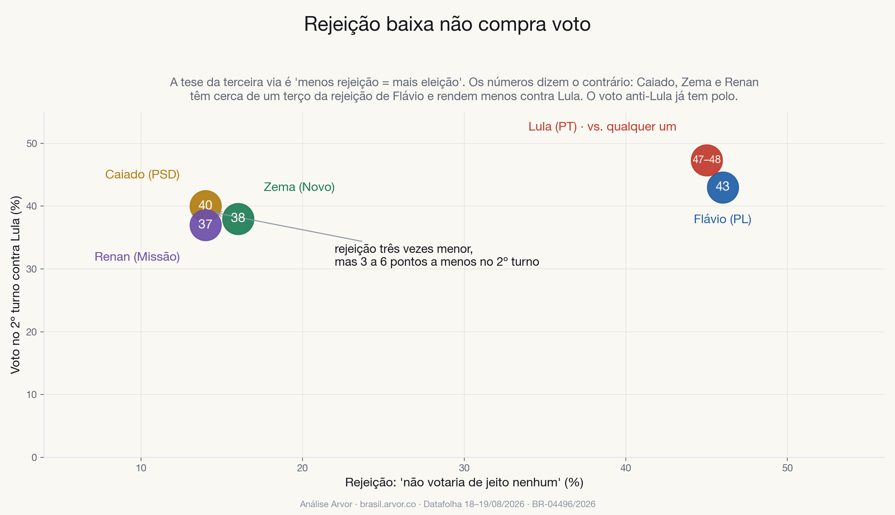
Cap. 16
Além do voto útil. O que estes números mandam a oposição fazer agora
O voto útil já foi cobrado e já foi pago. O segundo turno marca 43 há quatro ondas seguidas, três meses sem se mover um ponto, enquanto o primeiro turno convergiu de dez para seis. A convergência não comprou nada: era voto que o segundo turno já contava. Daqui para a frente todo ponto está em três lugares, e a pesquisa nomeia os três.
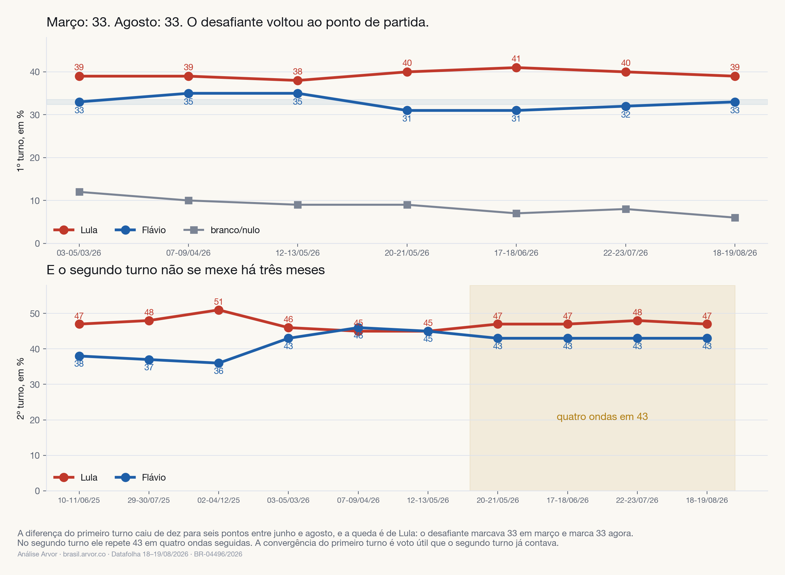
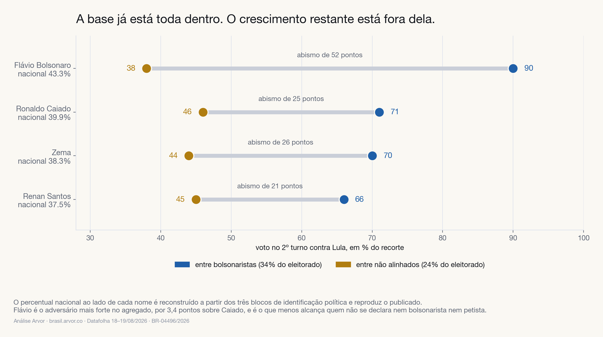
Parar de comprar o que já está pago
Noventa por cento do bloco bolsonarista já vota no candidato do PL no segundo turno. Onze por cento de quem prefere o PL diz que o voto pode mudar, o menor índice da pesquisa inteira. Não existe ponto a extrair ali. Cada real e cada minuto de palanque gastos falando com a base compram convicção que já está comprada.
Anexo p. 22 e 26 de 29 · bolsonaristas 90% no 2º turno, PL 11% de voto móvelA terceira via não se converte com medo. Converte-se com proposta.
Caiado, Renan Santos e Zema somam doze pontos do eleitorado. Desses doze, 63,6% dizem votar pelas propostas e pelo preparo, contra 56% no eleitorado do próprio Flávio, o menor índice da pesquisa. E 50,1% desse bloco declara que o voto ainda pode mudar, contra 21% no eleitorado do PL.
São seis pontos do eleitorado nacional simultaneamente móveis e propositivos. É a maior reserva conversível do país. Só que ela é imune ao argumento que a campanha vem usando: quem vota por proposta não se move por “não deixe o outro ganhar”. Move-se por proposta melhor.
Relatório p. 12 e 13 · páginas nunca citadas em mancheteO eleitor petista não cristalizado existe, e tem endereço
Dezoito por cento do eleitorado de Lula declara que o voto pode mudar: sete pontos do eleitorado nacional. Mais importante que o número é o mapa. Vinte e cinco por cento do país avalia o governo como regular, e dentro desse bloco o segundo turno é 53 a 35, com doze por cento não escolhendo ninguém. Entre eleitores de 16 a 24 anos, 41% avaliam o governo como regular e 39% dizem que o voto pode mudar. É o recorte mais móvel da pesquisa.
Esse eleitor não odeia o governo e não o defende. Ele está cansado. Não se ganha alguém assim chamando-o de comunista; ganha-se mostrando o que melhora na vida dele na semana seguinte à posse.
Relatório p. 7 e anexo p. 26 e 28 de 29Falar com quem tem diploma e emprego
O maior vão da pesquisa entre recortes de partição fechada está no ensino superior: 58% desaprovam o governo e 42% votam na oposição, dezesseis pontos de distância. Entre ocupados, nove. Entre quem ganha de dois a cinco salários, dez. Entre quem ganha mais de cinco, dez.
Nos dois recortes onde o vão é zero, ensino fundamental e fora da população economicamente ativa, a oposição já leva tudo o que a desaprovação oferece. O voto anti-governo que falta está inteiro no Brasil que estudou, trabalha e mora na cidade. Não é o eleitorado com quem a campanha vem falando.
Anexo p. 22 e 29 de 29 · desaprovação menos voto no 2º turnoIr buscar o branco e o nulo dos não alinhados
Entre quem não se declara nem bolsonarista nem petista, trinta por cento não escolhem ninguém no segundo turno. Esse bloco vale 7,23 pontos do eleitorado nacional parados em branco, nulo e indecisão. É quase o dobro da diferença publicada de quatro pontos. Nenhum voto precisa ser tirado do adversário para que essa conta vire.
Anexo p. 22 de 29 · não alinhados são 24,1% da amostra ponderadaTratar a fragmentação como custo, e não como paisagem
Treze por cento do bloco bolsonarista vota em Caiado, Renan Santos, Zema ou Cury no primeiro turno: 4,4 pontos do eleitorado nacional dentro do próprio campo. E entre março e agosto o branco e o nulo caíram de 12% para 6% sem que o desafiante ganhasse um ponto sequer. Os seis pontos que saíram do branco foram absorvidos pelas sete candidaturas menores que entraram no cartão em maio.
A leitura correta não é reclamar dos concorrentes. É reconhecer que o eleitor que hoje está com eles é exatamente o eleitor propositivo do item 02, e que ele saiu do branco porque alguém lhe deu um nome para dizer.
Relatório p. 9 e 10 · anexo p. 16 de 29Oferecer uma posição, não uma identidade
O próprio questionário do Datafolha revela o problema: ele pede que o eleitor se localize numa escala de 1 a 5 cujas pontas são dois nomes próprios, bolsonarista e petista, e depois joga em não alinhados todo mundo que ficou no meio ou recusou a régua. Um quarto do eleitorado é definido por aquilo que ele não é.
O instituto perguntou também a escala de esquerda a direita de 1 a 7 e não publicou. A candidatura que quiser esses vinte e quatro por cento precisa fazer o que o instrumento não fez: dar-lhes uma posição própria em que caibam sem ter de adotar a biografia de ninguém.
Questionário PO 814276, p. 3 · escala ESCALA_BP publicada, escala POSIÇÃO POLÍTICA não publicadaO enquadramento que não move os 30 pontos
“Vote em mim para o outro não ganhar.”Fala com quem já decidiu. Bate no eleitorado que tem 90% de conversão e 11% de mobilidade. Contra a terceira via, cuja base é 63,6% propositiva, o argumento devolve o eleitor para o branco em vez de trazê-lo para a urna.
O enquadramento que os números autorizam
“Vote em mim pelo que eu vou fazer na segunda-feira.”Fala com o eleitor propositivo, com quem avalia o governo como regular e com quem tem diploma e emprego. São os três lugares onde a pesquisa mede voto anti-governo ainda não recolhido, e os três respondem a proposta verificável, não a alarme.
Polarização é o som que a liberdade faz enquanto ainda está viva.
Um país onde metade discorda em voz alta da outra metade é um país onde ainda se pode discordar. O silêncio é que é o sintoma grave. Quando a divergência some do noticiário, ela não foi resolvida: foi retirada. Por isso este dossiê não trata a polarização como doença a ser curada por consenso administrado, e trata como o ruído normal de uma democracia que funciona. O que precisa de vigilância não é o volume da discordância, é quem tem poder para baixá-lo.
Há uma consequência prática disso para quem lê pesquisa. Um instrumento que comprime o espaço político inteiro numa régua de cinco pontos entre dois nomes próprios não está medindo polarização: está fabricando a moldura em que ela é a única forma disponível de existir. A escala de sete pontos entre esquerda e direita foi perguntada na mesma entrevista e não foi publicada. Um quarto do eleitorado ficou sem posição própria por decisão de edição, não por falta de dado.
Juízo editorial da Arvor, construído sobre os números acima e identificado como talTrocar liberdade por segurança é coisa de povo que não merece nenhuma das duas.
A troca é falsa e é vendida como se fosse inevitável. Estado que não sabe prender o criminoso passa a vigiar o cidadão, porque vigiar o cidadão é barato e prender criminoso é caro. Segurança de verdade custa investigação, perícia, dado limpo, carreira de Estado e cadeia que funcione. Vigilância de inocente custa um decreto. Quem oferece o decreto no lugar da investigação não está entregando segurança: está economizando trabalho às suas custas.
A posição desta casa é que segurança, liberdade e um Estado eficiente são a mesma agenda, não três agendas em disputa. Um Estado que mede o que faz, publica o que mede e responde pelo que publica protege mais e censura menos, porque não precisa esconder o próprio desempenho. É a razão de este dossiê existir na forma em que existe: número com página, conta com script, erro com endereço.
Juízo editorial da Arvor · posição declarada, não achado da pesquisa
O compromisso que torna isto utilizável
Este dossiê tem lado e usa o mesmo padrão de prova nos dois sentidos. A auditoria encontrou uma margem que inverte o segundo turno em favor da oposição, e publicou. Encontrou também que a ponderação do instituto corta pela metade a vantagem do presidente no primeiro turno, um achado que desmonta a acusação mais repetida contra o Datafolha, e publicou com o mesmo destaque. Encontrou que o adversário preferido do campo perde para os próprios substitutos entre os não alinhados, e publicou. Análise que só encontra o que convém ao autor não serve nem ao autor: ela o faz perder a eleição com boa disposição de espírito.
Cap. 17
Sete PDFs, 51 páginas, conta aberta
O relatório completo, o questionário, o registro, a declaração, o anexo territorial e as duas notas fiscais foram preservados com SHA-256. As catorze tabelas do anexo foram extraídas do texto nativo do PDF, sem digitação manual, e a leitura foi provada recompondo o placar publicado a partir de cruzamentos independentes.
Dados, auditoria e gráficos
scripts/datafolha-082026-audit.py extrai território, consulta PNADC e TSE, repondera e calcula incerteza.
scripts/datafolha-082026-graficos.py fecha a matriz IPF e gera os gráficos estratégicos.
scripts/datafolha-082026-figuras.py gera as comparações de perfil e sensibilidade.
scripts/datafolha-082026-historico-renda.py padroniza quatro ondas pela mesma PNADC.
Segunda camada.
scripts/datafolha-082026-cruzamentos.py lê as 14 tabelas do anexo direto do texto do PDF, sem digitação manual, e valida a leitura recompondo o placar publicado a partir de cruzamentos independentes.
scripts/datafolha-082026-aprofundamento.py calcula mercado aberto, campo contra peso, piso de ruído, vão, substituição, conversão e cobertura dos recortes.
scripts/datafolha-082026-figuras-fundo.py desenha as onze figuras novas.
scripts/datafolha-082026-prints.py recorta as páginas originais citadas.
Saídas públicas: base analítica, matriz de transferência, série histórica de renda e segunda camada.
Fato, inferência, ausência
Fato é tabela, documento ou cálculo determinístico. Inferência é reponderação, margem da diferença, IPF ou leitura semântica. Não demonstrado inclui fraude, coordenação editorial ou o resultado verdadeiro do eleitorado.
Fontes primárias e cobertura examinada
- Datafolha, relatório BR-04496/2026, 51 páginas, campo 18–19/08/2026; tabelas completas nas páginas 23–51.
- Datafolha, cruzamentos Lula × Flávio por renda: 20–21/05, página 23; 17–18/06, página 25; 22–23/07, página 18; 18–19/08, tabela 7.1, página 22.
- Datafolha, anexo de tabelas cruzadas, 29 páginas, 14 tabelas por 11 recortes; páginas 24 a 51 do PDF. A leitura foi validada recompondo Lula 47 e Flávio 43 a partir do cruzamento por identificação política (46,98 e 43,29) e por região (47,08 e 42,64).
- Datafolha, relatório de divulgação, página 12, decisão do voto por candidato, e página 13, motivação do voto por candidato. Ambas as páginas declaram bases em entrevistas.
- Datafolha, questionário PO 814276, 8 páginas; ordem, rodízio, cartões 1A e 1B e formulação integral das perguntas, inclusive as oito não publicadas.
- PesqEle/TSE, registro BR-04496/2026; campo 18–20/08, plano amostral, PNADC-A 2024 e valor declarado.
- Datafolha, declaração, anexo de bairros, municípios e setores, NF Folha e NF TV Globo.
- IBGE, PNAD Contínua: trimestre 2026-T1 para sexo, idade e escolaridade; anual 2025, visita 1, para renda.
- TSE, perfil atual do eleitorado: competência jun./2026, exterior excluído.
- Arvor, auditoria Datafolha julho/2026: referência de série, painel municipal e razão de consolidação.
- G1, “50% desaprovam governo Lula, e 47% aprovam”.
- UOL, “Pesquisa Datafolha para presidente”.
- UOL, segundo turno 47 × 43.
Limitações desta auditoria
Sobre a segunda camada. A leitura de que as bases das páginas 12 e 13 são contagens de campo se apoia em três verificações internas ao documento e é falsificável: basta o instituto declarar o contrário. O piso de ruído é um teste de robustez proposto por esta casa, não uma correção da pesquisa, e depende do critério de quais candidaturas contam como sem tração. O vão é teto endereçável e não previsão. O capítulo estratégico é juízo editorial identificado como tal, construído sobre números que estão todos referenciados por página.
Não há microdados, pesos individuais, estratos, PSU, taxa de abordagem, recusa nem efeito de desenho público. As bases das tabelas são ponderadas e as células são arredondadas. Repetição de município não significa repetição de entrevistado. O IPF estima fluxos agregados a partir de margens, não rastreia pessoas. A PNADC mede renda por instrumento mais extenso que uma pergunta de pesquisa eleitoral. A série histórica padroniza somente renda e não corrige interações com outras margens. Nenhum exercício aqui substitui a apuração oficial ou permite acusar fabricação de dados.
Imagem de capa reutilizada do dossiê Datafolha 07/2026: rua 25 de Março, São Paulo, Otávio Nogueira, CC BY 2.0, via Wikimedia Commons. Nenhum instituto, veículo, partido ou campanha financiou ou revisou este laudo.